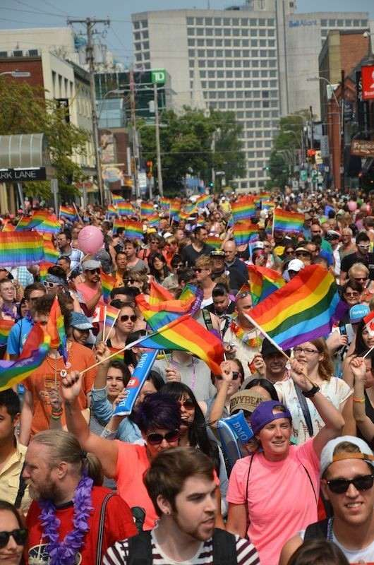

The struggles faced by the LGBTQIA+ community stem from deeply ingrained societal biases and misconceptions about gender and sexuality. Despite societal progress, there are still individuals who harbor prejudice and intolerance towards those who identify outside of traditional norms. This discrimination takes various forms, including verbal abuse, physical violence, and exclusionary behaviors. Such experiences contribute to the disproportionately high rates of mental health issues within the LGBTQIA+ community.
The impact of these struggles on mental health is significant, as individuals may grapple with feelings of isolation, anxiety, and depression. Recognizing these challenges as part of a broader systemic issue is crucial. It underscores the importance of not only fostering acceptance on an individual level but also implementing broader societal changes. This involves advocating for legal protections against discrimination, incorporating LGBTQIA+ inclusive education to challenge stereotypes, and creating environments where diverse gender identities and sexual orientations are respected and celebrated.
Efforts to address these issues should focus on promoting empathy and understanding, challenging harmful stereotypes through education, and creating safe spaces where individuals can express their identities without fear of judgment or discrimination. By working collectively towards structural changes and fostering a culture of inclusivity, society can move closer to a future where the LGBTQIA+ community can thrive without facing the mental health burdens imposed by societal biases.
STRUGGLES OF THE COMMUNITY
